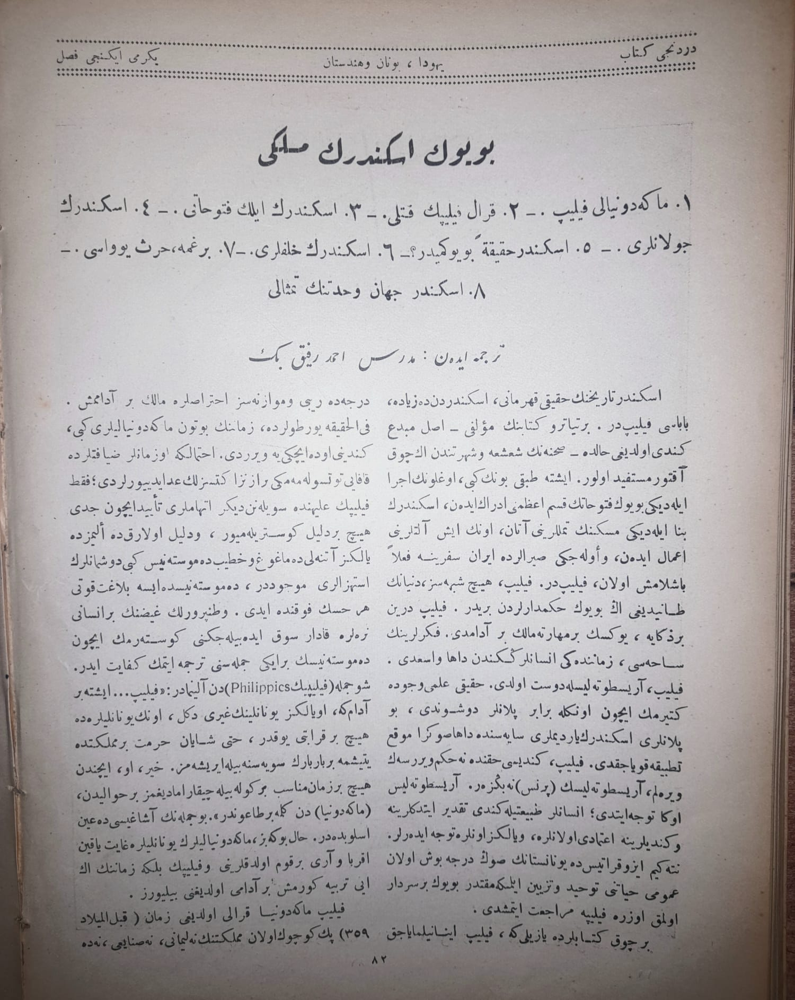
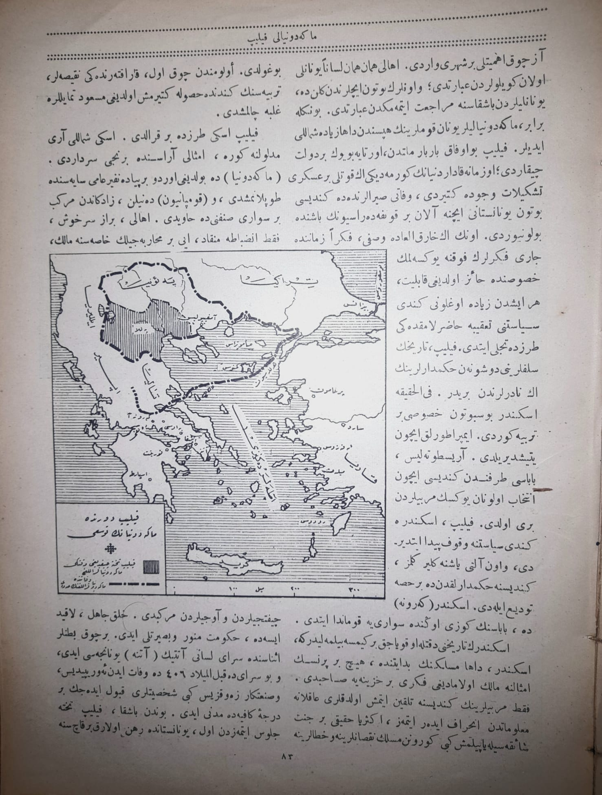

|

|
Büyük İskenderin Mülkü
1.Makedonyalı Filip, 2.Kral Filip'in Katli, 3.İskender'in İlk Fütuhatı, 4.İskender'in Cevelanları, 5.İskender Hakikaten Büyük Müdür?, 6.İskender'in Halkları, 7.Bir Gama Hars Yuvası, 8.İskender, Cihan Vahdetinin Timsali
Tercüme Eden: Müderris Ahmet Refik Bey
İskender tarihinin hakiki kahramanı, İskender'den de ziyade babası Filip'tir. Bir tiyatro kitabının müellifi-asıl mübdi kendi olduğu halde- sahnenin şaşa ve şöhretinden en çok aktör müstefid olur. İşte tabiki bunun gibi, oğlunun icra eylediği büyük fütuhatın kısmı azamını idrak eden, İskender'in bina eylediği meskenin temellerini atan, onun inşaatlarını amal eden ve evvelceki sıralarda İran seferine faalen başlamış olan, Filip'tir. Filip, hiç şüphesiz dünyanın tanıdığı en büyük hükümdarlardan biridir. Filip derin bir zekaya, yüksek bir maharete malik bir adamdı. Fikirlerinin sahası, zamanının insanlarınkinden daha vasi'di. Filip, Aristoteles ile dost oldu. Hakiki ilmi vücuda getirmek için onunla birebir planlar düşündü, bu planlar İskender'in yardımları sayesinde daha sonra mevki' tatbike koyacaktı. Filip, kendisi hakkında ne hüküm verirsek verelim, Aristoteles'in (Prens)ine benzer. Aristoteles ona teveccüh etti; insanlar tabiatıyla kendi takdir ettiklerine ve kendilerine itimadı olanlara, ve yalnız onlara teveccüh ederler. Nitekim İsokrates'de Yunanistan'ın son derece boş olan umumi hayatını tevhid tezyin eylemeye muktedir büyük bir serdar olmak üzere Filip'e müracat etmişti. Birçok kitaplarda yazılı ki, Filip inanılmayacak derecede raybi ve muvazenesiz ihtiraslara malik bir adammış. Filhakika yortularda, zamanının bütün Makedonyalıları gibi, kendini evde içkiye verirdi. İhtimal ki o zamanlar ziyafetlerde kafayı tütsülememeği biraz nezaketsizlik addediyorlardı; fakat Filip'in aleyhinde söylenen diğer ihtimalleri teyit için ciddi hiç bir delil gösterilemiyor, ve delil olarakta elimizde yalnız Atinalı demagog ve hatip Demosthenis gibi düşmanların istihzalleri mevcuttur, Demosthenis'te ise belagat kuvveti herkesin fevkinde idi. Vatanperverlik ? bir insanı nerelere kadar sevk edebileceğini göstermek için Demosthenis'in bir iki cümlesini tercüme etmek kifayet ider. Şu cümleden (Filip'ten) alınmadır: "Filip... İşte bir adam ki, o yalnız gayri değil, onun Yunanlılara da hiç bir kerabeti yoktur, hatta şayan hürmet bir memlekette yetişme bir barbarın seviyesine böyle erişemez. Hayır, o, içinde hiç bir zaman münasip bir köle bile çıkarmadığımız bir havaliden, Makedonya'dan gelme bir taundur" Bu cümlenin aşağısıda aynı üsluptadır. Halbuki biz, Makedonyalıların Yunanlılara gayet yakın akraba ve arı bir kavim olduklarını ve Filip'in belki zamanının en iyi terbiye görmüş bir adamı olduğunu biliyoruz. Filip Makedonya Kralı olduğu zaman (M.Ö. 359) pek küçük olan memleketinin ne limanı, sanayi, ne de
|
|

|
az çok ehemmiyetli bir şehri vardı. Ahali hemen hemen lisanen Yunanlı olan köylülerden ibaretti; ve onların bütün içlerinden gelende, Yunanlılardan başkasına müracaat etmemekten ibaretti. Bununla beraber, Makedonyalılar Yunan kavimlerinin hepsinden daha ziyade şimalli idiler. Filip bu ufak beraber milletten, ortaya büyük bir devlet çıkardı; o zamana kadar dünyanın görmediği en kuvvetli bir askeri teşkilat vücuda getirdi, vefati sıralarında da kendisi bütün Yunanistan'ı içine alan bir konfederasyonun başında bulunuyordu. Onun en harikulade vasfı, Fikren zamanında cari fikirlerin fevkine yükselmek hususunda haiz olduğu kabiliyet, her işten ziyade oğlunu kendi siyasetini takibe hazırlamaktaki tarzda tecelli etti. Filip, tarihinin seleflerini düşünen hükümdarlarının en nadirlerinden biridir. Filhakika İskender büsbütün hususi bir terbiye gördü. İmparatorluk için yetiştirildi. Aristoteles, babası tarafından kendisi için intihab olunan yüksek mürebbilerden biri oldu. Filip, İskender'e kendi siyasetine vakıf peyda ettirdi, ve on altı yaşına gelir gelmez, kendisine hükümdarlıktanda bir hisse tevdi eyledi. İskender Kerone'de, babasının gözü önünde süvariye kumanda etti. İskender'in tarihini dikkatle okuyacak bir kimse bilmelidir ki, İskender, daha mesleğinin bidatında, hiç bir prensin emsaline malik olamadığı fikri bir hazineye sahipti. Fakat mürebbilerinin kendisine telkin etmiş oldukları alkane malumattan inharaf(?) eder etmez, ekseriye hakiki bir şaikesiyle yapılmış gibi görünen meslek noksanlarına ve hatalarına boğuldu. Ölümünden çok evvel, karakterindeki ?, terbiyesinin kendinde husule getirmiş olduğu mesud ? galebe çalmıştı.
Filip eski tarzda bir kraldı. Eski şimalli arı meduluna? göre, emsali arasında birinci serdardı. Makedonya'da bulunduğu ordu bir piyade ? sayesinde toplanmıştı, ve kompanyon denilen, ? mürekkeb bir süvari sınıfınıda havi idi. Ahali, biraz sarhoş, fakat inzibata ?, iyi bir muharebecilik hususuna malik, çiftcilerden ve avcılardan mürekkepti. ?? ise de, hükümet ? ve basiretli idi. Birçok ? esnasında sarayı lisanı Attik (Atina) yunancası idi, ve bu sarayda kablel miladi 406 da vefat iden ??, ve sanatkar ? gibi şahsiyetler kabul edecek bir dereceyi kafiyede medeni idi. Bundan başka, Filip tahta, cülus etmezden evvel, Yunanistan'da rehin olarak birkaç sene
|